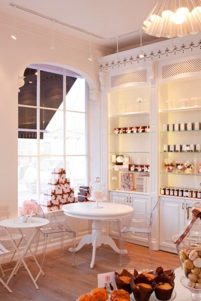
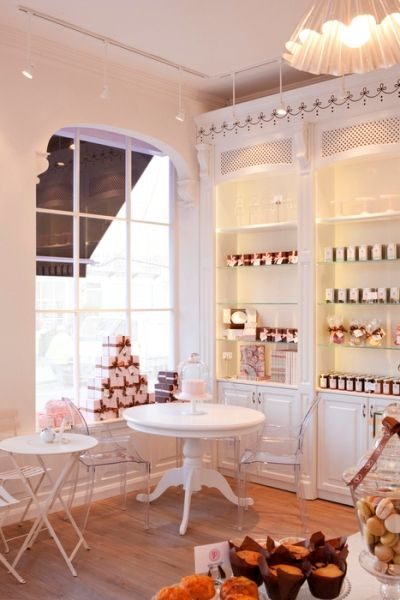

Sabor e tradição
 

A confeitaria Lua Doce, surgiu do sonho em conjunto de três mulheres confeiteiras: Rosana, Rebecca e Raquel.
Com talentos herdados de suas avos e mães, a tradição está sempre presente na composição de cada bolo ou doce criado.
Nascido primeiramente como um projeto de casa para os amigos em 2017, o sucesso foi tamanho que se expandiu e acabou virando um negócio de pleno direito, agora com 3 unidades, espalhadas em pontos estratégicos da cidade.
A primeira receita criada foram nossos cupcakes de flores, que se mantém no "top 5" dos mais pedidos, nosso bolo de chocolate e blueberry também é um dos nossos mais pedidos, criado na mesma época, é uma obra prima no quesito sabor.
A proposta de uma confeitaria com moldes tradicionais sem perder a elegância, é característica tanto dos nossos produtos alimentícios, quanto dos nossos estabelecimentos.